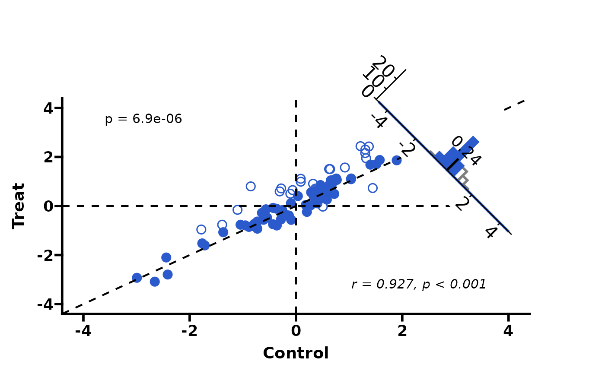
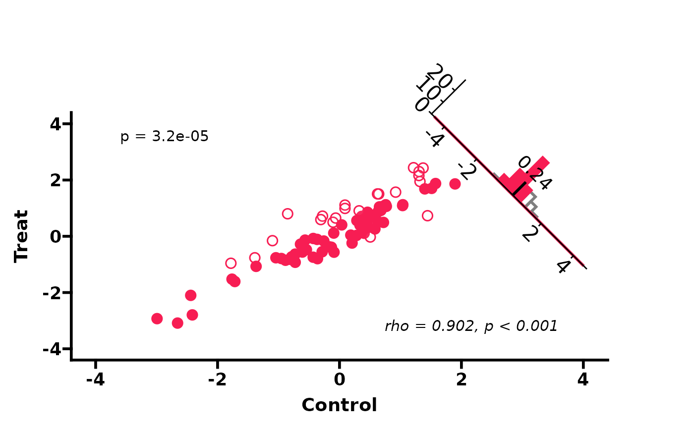

Create a paired scatter plot with a rotated (-45 degree) difference histogram inset in the upper-right corner. Suitable for Control vs Treatment paired comparisons. Inspired by Cell journal figure style.
Usage
PlotScatter3(
data,
x = "Control",
y = "Treat",
group = "group",
group_levels = NULL,
highlight_color = "#f71d53",
insig_border = NULL,
point_shape = 21,
point_size = 3,
point_stroke = 0.8,
xlab = "Control",
ylab = "Treat",
axis_limits = NULL,
axis_breaks = NULL,
show_refline = TRUE,
test_method = "wilcox",
p_digits = 2,
p_size = 4,
p_x = NULL,
p_y = NULL,
cor_method = "pearson",
cor_size = 4,
cor_x = NULL,
cor_y = NULL,
hist_bins = 30,
hist_x_limits = NULL,
hist_x_breaks = NULL,
hist_border = NULL,
median_label_size = 5,
median_line_yend = NULL,
inset_left = 0.6,
inset_bottom = 0.6,
inset_right = 1.1,
inset_top = 1.1,
inset_angle = -45,
inset_vp_width = 0.85,
inset_vp_height = 0.75,
theme_use = theme_my(border = FALSE, panel.grid = ggplot2::element_blank()),
plot_margin = c(80, 60, 5, 5),
filename = NULL,
width = 6,
height = 6.5,
dpi = 300,
bg = "white"
)Arguments
- data
A data.frame containing x (control), y (treatment), and group columns.
- x
Column name for control values (X axis). Default
"Control".- y
Column name for treatment values (Y axis). Default
"Treat".- group
Column name for significance grouping (must have 2 levels). Default
"group".- group_levels
Character vector of length 2:
c(insignificant, significant).NULLauto-detects from data.- highlight_color
Colour for the significant group. Default
"#f71d53".- insig_border
Border colour for insignificant points. Default
NULL(same ashighlight_color).- point_shape
Point shape code. Default 21 (filled circle).
- point_size
Point size. Default 3.
- point_stroke
Point border width. Default 0.8.
- xlab
X axis label. Default
"Control".- ylab
Y axis label. Default
"Treat".- axis_limits
Numeric vector of length 2 for axis range. Default
NULL(auto: symmetric range from data).- axis_breaks
Numeric vector for axis tick positions. Default
NULL(auto viapretty()).- show_refline
Whether to show reference lines (x=0, y=0, y=x). Default
TRUE.- test_method
Paired test method:
"wilcox","t.test", or"none". Default"wilcox".- p_digits
Number of digits for p-value. Default 2.
- p_size
Text size for p-value label. Default 4.
- p_x, p_y
Coordinates for p-value label. Default
NULL(auto).- cor_method
Correlation method:
"pearson","spearman", or"none". Default"pearson".- cor_size
Text size for correlation label. Default 4.
- cor_x, cor_y
Coordinates for correlation label. Default
NULL(auto).- hist_bins
Number of histogram bins. Default 30.
- hist_x_limits
Histogram X axis range. Default
NULL(auto).- hist_x_breaks
Histogram X axis ticks. Default
NULL(auto).- hist_border
Histogram bar border colour. Default
NULL(auto).- median_label_size
Text size for median label. Default 5.
- median_line_yend
Height of median vertical line. Default
NULL(auto).- inset_left, inset_bottom, inset_right, inset_top
Inset boundaries (patchwork coordinates). Default 0.6, 0.6, 1.1, 1.1.
- inset_angle
Rotation angle for inset. Default -45.
- inset_vp_width, inset_vp_height
Viewport size for inset. Default 0.85, 0.75.
- theme_use
Theme function, string, or theme object. Default
theme_my(border = FALSE, panel.grid = element_blank()).- plot_margin
Numeric vector of length 4 (top, right, bottom, left) for main plot margin. Default
c(80, 60, 5, 5).- filename
Output file path. Default
NULL(no save).- width
Output width in inches. Default 6.
- height
Output height in inches. Default 6.5.
- dpi
Output resolution. Default 300.
- bg
Output background colour. Default
"white".
Details
For single-group scatter with marginal boxplots, see [PlotScatter1()]. For dual-group scatter with marginal boxplots, see [PlotScatter2()].
See also
Other scatter plots:
PlotScatter1(),
PlotScatter2()
Examples
library(ggplot2)
# Simulated paired data (Control vs Treatment)
set.seed(42)
n <- 80
ctrl <- rnorm(n, mean = 0, sd = 1)
treat <- ctrl + rnorm(n, mean = 0.3, sd = 0.5)
sig <- abs(treat - ctrl) > 0.5
df <- data.frame(
Control = ctrl,
Treat = treat,
group = ifelse(sig, "Significant", "NS")
)
# Basic usage (auto axis, wilcoxon test, pearson correlation)
PlotScatter3(df)
#> Warning: Removed 4 rows containing missing values or values outside the scale range
#> (`geom_bar()`).
#> Warning: cannot clip to rotated viewport
# Custom highlight colour and t-test
PlotScatter3(df, highlight_color = "#2a5acb", test_method = "t.test")
#> Warning: Removed 4 rows containing missing values or values outside the scale range
#> (`geom_bar()`).
#> Warning: cannot clip to rotated viewport

# Spearman correlation, no reference lines
PlotScatter3(df, cor_method = "spearman", show_refline = FALSE)
#> Warning: Removed 4 rows containing missing values or values outside the scale range
#> (`geom_bar()`).
#> Warning: cannot clip to rotated viewport
